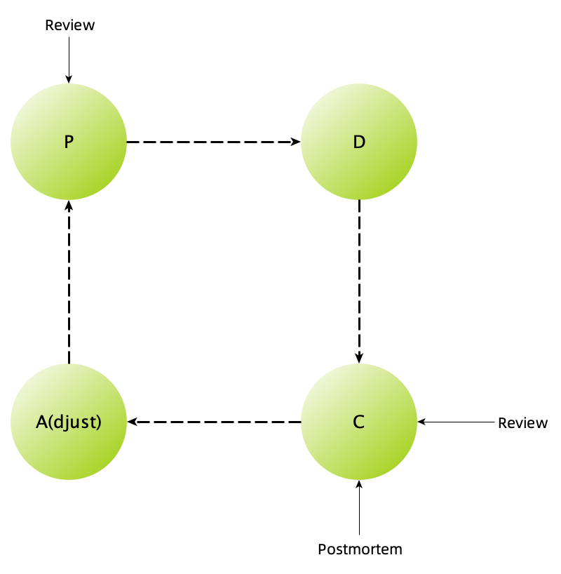

复盘不是你想的那样
王福强
2019-07-29我发现很多同学搞不清楚故障出现之后， 故障复盘会与故障评审会之间的关系是什么，所以就老调重弹一下，说说故障复盘到底复得是什么，盘得是哪样…
首先，事儿做成了叫review 1， 事儿搞砸了叫postmortem， 后者才是我们说的故障复盘，复盘的目的是为了吸取经验教训（当然更多是教训）， 从意识上，到行为上都尽量不再犯同样的错误，从而避免导致类似的故障再次发生，从这个意义上来说， 复盘就是为了不二过 2。

复盘不是追责，复盘更多是摆事实，理过程，通过梳理和回顾事实和事件发生与应对的过程，我们来发现工作中有哪些疏漏，有哪些是做得不好的需要改进的，又有哪些是可以提前预防的提前准备的。
在梳理整个事情发生的过程中，一定会牵扯什么人做了什么动作，引起什么样的影响和后果，这就像是事后整理的auditing log一样， 不带入任何感情色彩和责罚的倾向，就是事实。
如果你把故障复盘会开成了故障评审会，那么，这种复盘会是没有任何意义的，一旦你带着责罚的态度和动机来做这个事情，所有的当事人基本上就都是退缩和推卸责任的姿态来应对，既无助于还原事件真相，也不会对个人和团队有任何益处。白色恐怖虽然谈不上，但气氛也不会好到哪里去。
所以， 故障复盘的时候，会议主持人一定要把握好故障复盘会和故障评审会的差异，借事修人，通过还原事实和过程来帮助团队吸取经验教训并成长，这才是故障复盘会的正确姿势。
至于故障评审会，那就是另外一个话题了…